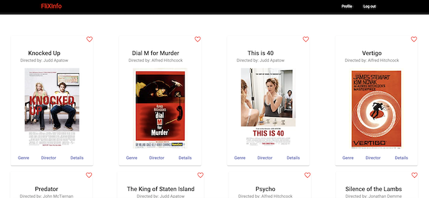

FliXInfo is a complete web application (client-side and server-side) built using full-stack JavaScript technologies. The app provides users with access to information about different movies, directors, and genres. Users will be able to sign up, update their personal information, and create a list of their favorite movie.
The focus of this project was to create a complete web app: a REST API which interacts with a database that stores data about different movies, was first created using Node.js and Express.js. The client-side of the same application, was then built using two seperate frontend clients: React & Angular. The backend is hosted with Heroku and uses a JWT based authentication.